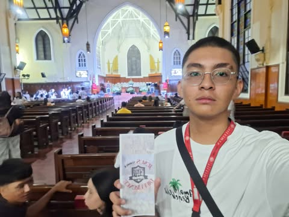
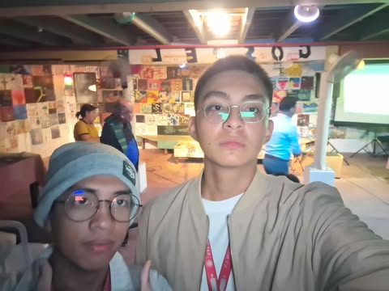
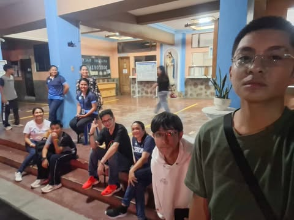
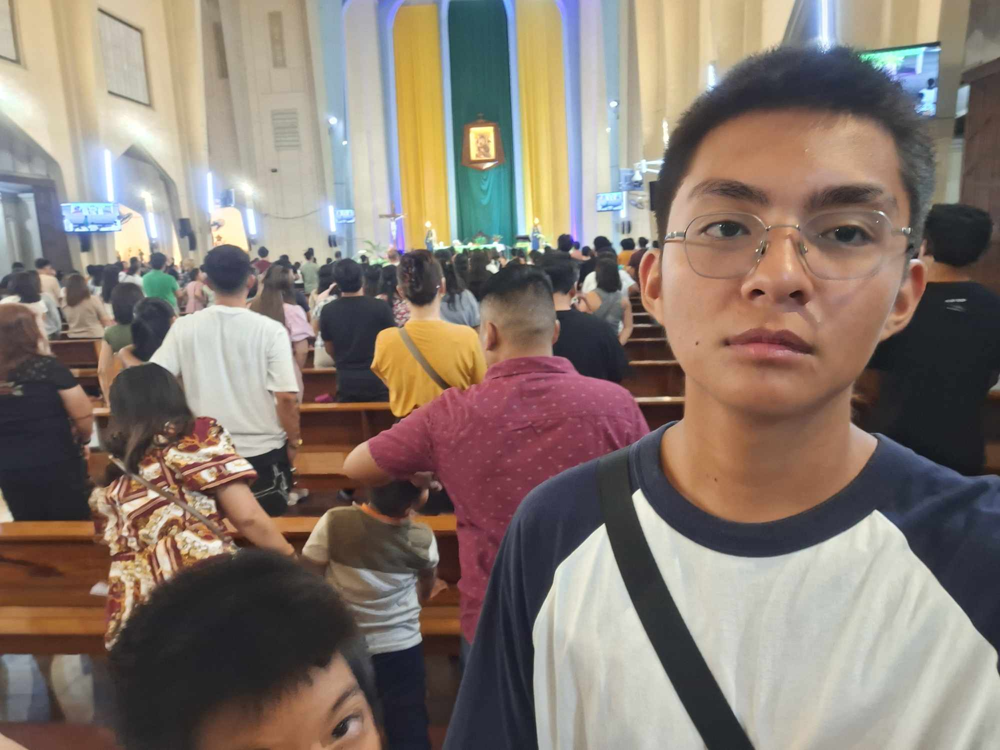
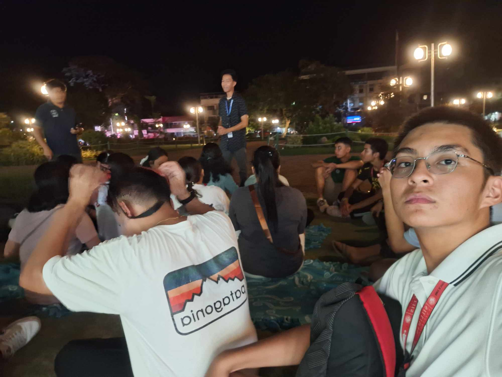
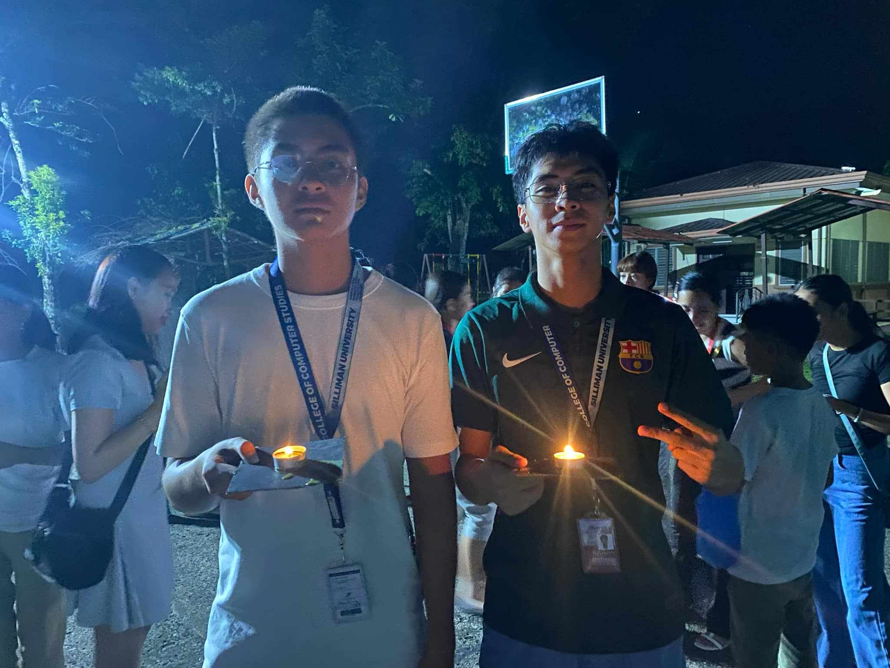
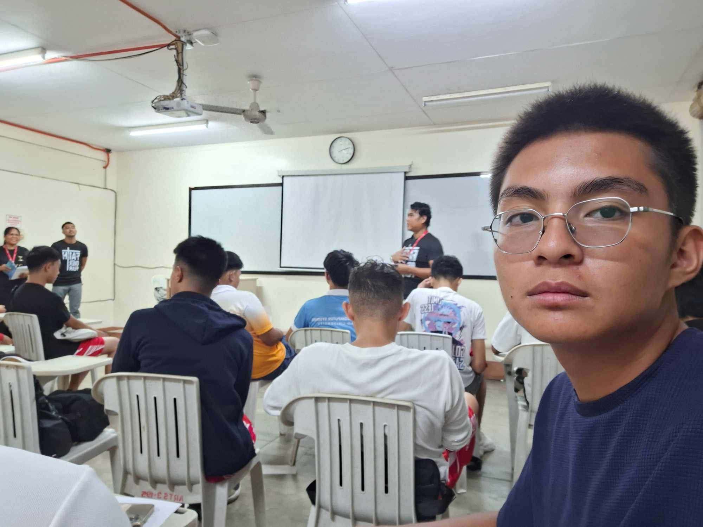
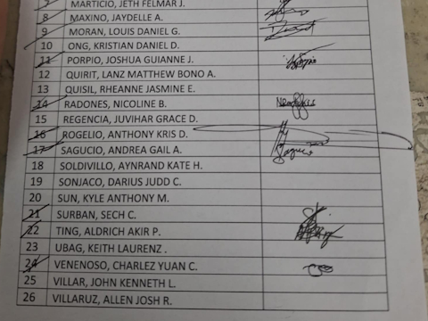
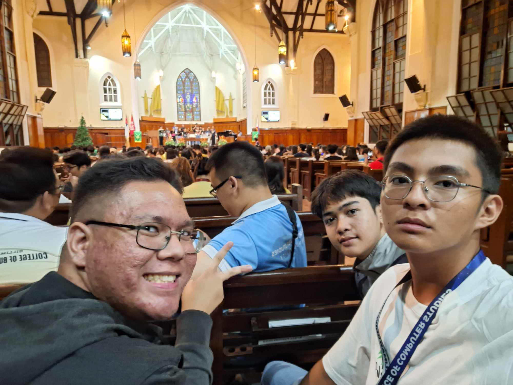

A Jesus To Make A Difference (J2MaD) Praise and Worship Team Anniversary Concert
Aug 31, 2024 | 6:00 PM By: Silliman University Christian Youth Fellowship (1 point)
The Praise and Worship Concert hosted and located at the SU Church was an event concert playing worship songs from English songs to OPM songs. This was during August 31, 2024 at 6:00 PM. We were part of the crowd enjoying the concert and music.
I learned to appreciate artists and their passion for music during this concert. The concert was what I expected: charismatic, enjoyable, and making a strong connection to God using music. I was surprised at the level of master and stage presence the artist put off to make the concert more engaging. The concert strengthened my belief in the power of music to inspire and worship. The Artist performed so well that it made a sense of unity among us. I liked the event as it was a new experience for me and the music was so satisfying to experience. My faith was strengthened by the power of worship using music.
The event deepend my spiritual connection. I learned the importance of music and can use music to worship. I can apply this learning by putting worship music more into my daily life. I continue to support music as a form of music and take the chance to join the next worship concert. There are alot of benefits this event has to offer. It was a truly spiritual up-lifting experience and strengthened my faith by using powerful songs.
Because of this activity, I am more spiritually connected. I strengthened my faith as well as appreciating the power of music to touch, heal, and inspire other people.

Acoustic Night “Leading the Melody”
Sept 17, 2024 | 6:00 PM By: Silliman University Christian Youth Fellowship (1 point)
The Acoustic Night “Leading the Melody” was a series of performances and presentations as well as games and worship. This was hosted by the SU Christian Youth Fellowship on September 17, 2024 at 6:00PM at the SU Catacombs behind SU church. Me and my friends volunteered to be a part of this event through a post on facebook.
I learnt the power of compassion and strength as a community. I expected this to be mostly worship and a couple songs but my expectations were wrong. It actually included various engaging activities, mostly jamming, and having a good time overall. I was surprised that only a few came to this event, the ones present were only me and my friends because this event was one of my favorites as it provided food and entertainment all throughout. It felt like heartwarming jamming to music and learning about the history of the SU catacombs and lets not forget the meaningful passages. The event impacted my way of viewing worship events as a whole. The ates who made us feel at home and offered us food impacted us the most because they offered kindness and hospitality without asking anything in return. I liked the experience because it was calming and it was satisfying to listen to music. The values expressed in this event were kindness, hospitality, and practicing our faith.
It affected my worldview as it reinforced the power of music to connect with God. I learned that music is a beautiful mode of worship as well and anyone could worship anyway they would like to express themselves. I look forward to the next worship because there are a lot of things you can enjoy and learn from the event. The benefits of these events are that you can practice worshiping by singing along to the music or just by listening to it. It strengthens connections to God.
Because of this activity, I am more spiritually connected and inspired by music to worship God. I am also aware of the power of music to connect with God on a deeper level. This experience made me closer to God as a whole.

SYM Youth Fest
Sept 27, 2024 | 7:00 PM By: Saint Louis School of Don Bosco (1 point)
The SYM Youth Fest was an event hosted at Saint Louis School of Don Bosco on September 27, 2024 at 7:00PM. The purpose of this activity was to encourage the youth to partake in fun activities but also remain god-centered individuals. To show the youth that it is okay to have fun without sin.
I have learned that you can have fun without sin. While most of the youth go to clubs, bars, and other places doing things that may involve sinning, there are also events to experience these things free from sin. I expected that the event only included worship and a few parlor games. But the event included a concert with loud music and dancing which was similar to what bars and clubs have to offer. I was surprised that students still had fun during this activity without the alcohol or what. I felt happy that activities like this still exist and are being practiced. During the mass, fr. Jake talked about youth doing drugs and alcohol. He stated that they only crave things like this because they lack something on what they feel. I liked the experience because it showed that it is possible to have fun in modern trends without sinning and that was satisfying to hear. It broadened my understanding of youth who are facing problems and showing them sympathy to give support and guidance.
This experience taught me that the youth can experience these types of problems and we should guide them accordingly to save them from things that can affect them negatively. I wish to be still involved with organizations that support the wellbeing of others and in this case the youth. This has many benefits like giving a positive and safe experience for the youth while being fun at the same time while not disregarding values and morals. If this activity would come again in the near future I would recommend that more people participate in this activity as it can be helpful and beneficial.
Because of this activity, I am a person that realized and experienced that having fun without sin is still possible. I am also a person who will recommend this activity. I give full support and guidance to youth who are experiencing hard times.

26th Sunday Mass
Sept 29, 2024 | 7:00 PM By: Our Mother of Perpetual Help Redemptorist Church (1 point)
Just like any usual Sunday, I attend alongside my family church at Our Mother of Perpetual Help Redemptorist Church located at San Lorenzo Ruiz St. Brgy. Taclobo. On this particular day, September 29, 2024 6:00pm on a cloudy but not raining Sunday was but a regular Sunday mass. I never expected a homily that struck me ‘till this day and that's why I added it as a journal entry for me GE10, The topic of the homily was about divorce. Coming from a family who went through similar problems. For the first time during homily I could really relate to the message.
The homily talked about what seemed like a recap of my life from childhood to present. It talked about the point of view of children of divorced parents. It affected me so much that I started to slightly tear up but also stopped myself because I don't really want to cry in public. It surprised me so much that I knew for a fact that it was a message from God to cheer me up and give me light. The priest talked about how children had to pick a side which was “who are you going to pick? Mother or Father?” and how difficult for a child barely understanding life had to answer that question. I responded inside my head “Yes!”, for a fact that my parents also asked the same question to me. I was just glad that neither of my younger brothers had to experience that situation but as an older brother I had to endure. Ever since I started thinking like a grown up because at a young age I already understood the situation we were in. This made me a person that would be serious and mature towards my sibling, usually just going with the flow and managing all the family members so that no one would be unhappy, and I would rather suffer than seeing my other family members suffer, all of this at the ripe age of 12. Relatives would usually compliment me that I was mature for my age, just realizing now that it was not a good thing. All of these going through my head during the homily like a brief flashback of my life prior. After listening more and more to the priest It opened me up to finally loosen up and I hope that my future children would not experience and encounter this type of problem during their childhood.
After that mass I knew that it was a message from God, which I was greatly thankful for. After that encounter I started to openly communicate with God every night continuing to build that relationship with God. It also taught me to open my eyes and to calm down and let things go with the flow. It was never my responsibility from the start to keep and maintain that family, but now they are separated, a few problems sometimes occur due to miscommunication and a grudge which I still do stress about most of the time. To this day I still continue to participate and go to church every sunday. It really helps me destress and take time to talk to the lord. This benefits me by helping and relaxing my mental health. The power of God is indeed spectacular.
Because of this activity, I am a completely different person. A person who is slowly healing their childhood trauma. A person who learned from the mistakes of their parents. A person who no longer treats himself as an emotionless person who would rather suffer than see my family suffer and try so hard to glue the family together. A person who treats himself like a human being with emotions and feelings. In short, a bigger person overall.

The Book of James Bible Study
Oct 2, 2024 | 6:00 PM By: Psalm Dumaguete (1 point)
The book of James bible study hosted by the student organization PSALM Dumaguete. This lasted from 6:00PM to 8:00PM on October 2, 2024 at Freedom Park around the center of the park itself. The topic of this bible study was the book of James. This was not an ordinary activity but it was engaging and fun. We were participants since this event was open for all and without registration.
I learned to read the Bible when I need advice or guidance. I expected the event to be an all talk activity but I was proven wrong because before the event, we had games like trivia and getting to know each other by making us pair with someone who we did not know. The facilitators were the ones that influenced my perspective. They taught and discussed the book of James so wisely and super engaging. The most satisfying ones were the times I could answer the trivia questions.
My desire for self-improvement and the importance of living out one’s faith through good deeds. I would continue to join another bible study whenever I have the chance. To listen to the book of James who focused about guidance and spiritual growth. If I could do the event again I would ask more questions and listen more attentively to fully grasp the information that was given.
Because of this activity, I am more knowledgeable about the book of James equipping me to live life in practical ways. This inspired me to grow spiritually and to persevere during challenges.

The Living Rosary
Oct 31, 2024 | 6:00 PM By: Casa Miani - Arvedi Dumaguete City (1 point)
The living rosary was an event held at Casa Miani Orphanage. From 6:00 PM to 9:00PM on October 31, The event was in celebration of the end of October which was also the Month of the Rosary. The event started with a mass then a procession then after that there was a circle activity in which we lit the candle while praying the Holy Mary. We made the event successful by being part of the participants who were part of the event.
I got what I expected as this was not the first time I attended this type of event since it was common in our previous school. It followed the same sequence of events as usual but what struck out to me the most was the experience of the location. What really surprised me was the dedication and discipline of the orphans living in Casa Miani. It was heartwarming as they had the patience and unity as a community. This changed my view on the experience of just following a routine but instead the kids showed me a strong sense of devotion, unity, and reflection. It made me reflect and understand the importance of the Holy Rosary as it is one of the strongest weapons against evil as stated in the homily.
The orphans who made this event meaningful and are the ones that showed deep commitment and dedication significantly impacted on how I viewed the event. It inspired me to reflect and understand thoroughly the event and its importance. The moment of solemnity and peace was satisfying and was a breather experience that I needed at that time. If invited and have the opportunity to be part of this event next year I would gladly accept as this event left a mark on my spiritual well being. I benefited from this activity as it strengthened my faith and also gained a sense of belonging.
Because of this activity, I am stronger in faith and inspired to join future spiritual events to further strengthen my relationship with God. I am also a person who learned to trust Mother Mary to protect us from evil and the rosary is the strongest weapon against evil.
 
Galilean Fellowship
Nov 19, 2024 | 5:00 PM By: Silliman University (1 point)
The Galilean Fellowship is an event in accordance with the UCLEM or University Christian Life Emphasis Month. There were 2 schedules for the Galilean Fellowship which was either Tuesday (Nov. 19) or Thursday (Nov. 21), Our group was assigned on Tuesday. The original location for the event was at the amphitheater, but due to rain we were transferred to the 3rd floor of Ausejo hall. The theme of the event was “Faith Over Fear: Facing Life’s Giants” which was emphasising on facing our fears and having faith in God. We were in group 16 which was shown to us during our CHS class. I was appointed as a point person for the attendance of my groupmates to later submit to our CHS professor.
The entire event was a refresher of our faith in God. It was a fun and a breather experience that I recommend the next batches of the event to attend and experience regardless of being required or not. I got what I expected by being shown new experiences and guidance that lead to me learning more about God and strengthening my faith in God. We were asked to go in front and state our biggest fears, after that we were to told to put our hand in an unknown paper bag and was not supposed to take anything inside, It felt fuzzy and scary since I thought it was a spider which was one of my biggest fears, but the speakers were reassuring enough to tell me they were not something scary. The speakers of the event were amazing at making us realize the things we are afraid of and helping us overcome them. They delivered the message wonderfully and made an impactful difference in our lives.
I learned to be more confident in myself and I realized that being in a place that is unfamiliar or outside your comfort zone can be stressful or scary but having the trust in God made me brave in a way that I no longer avoid experiences that are new but actually try more new experiences that build my character as a whole. It definitely affected my worldview from having pessimistic tendencies. It helped me change from viewing everything to be scary and playing everything safe to becoming a risk taker who dares myself into new experiences all because I have faith and trust in God. It is an experience that I needed in my life and I am grateful to experience such an activity that was set up by the school. It helped me change myself for the better.
Because of this activity, I am a changed person who likes to take risks and try new experiences because I have greater faith in God than I had before. I was a person who likes to play it safe but I realized due to this activity that I was missing out on things if I was too scared to experience new things. In today’s world you have to adapt or lose out on opportunities. I am now thankful for this activity for changing me for the better and I have learned a lot of things that I know will apply or help me in the future.

University Midweek Convocation
Nov 20, 2024 | 6:30 PM By: Silliman University (1 point)
The University Midweek Convocation was a mass held at the SU church on November 20, 2024 at 6:30PM. This was a good opportunity to go to church since I did not attend Sunday church last week due to high fever and sore throat. This was a midweek mass for all colleges.
I learned that everyone is a sinner but was saved by Jesus. I expected a holy mass and a time to reflect on the lord and to make up for my absence last sunday. My expectations came true and I was happy that I took the chance to attend the mass. I was surprised that the homily of the mass caught my attention and gave me a reason to reflect on the actions I do. I admired the speaker’s way of convincing us to side with the lord and reject all evil. It was satisfying to know how passionate and powerful his message can be. This activity reminded me how meaningful it is to come together with others in worship and take time for spiritual reflection.
This broadened my worldview on sinning and the sacrifices that Jesus endured for us. This gave me time to reflect and change my ways for the better. I learned to be mindful of my actions and to build a stronger relationship with God. When in times of lows or highs I would still come to church to ask for thanks or forgiveness as I know that God is a forgiving God. This event is beneficial because it gave me a reason to change my ways, reflect on my actions, and be a better person as a whole.
Because of this activity, I am a person who is mindful of his actions and wishes to reduce sin and avoid evil. This event showed the love of God and I wish to honor God’s wishes and be a respectful person.